Régression logistique par morceaux, arbres de décision¶
Ce qui suit explore une façon fantaisiste de construire des régressions logistiques à mi-chemin entre les arbres de décisions et les réseaux de neurones. Dans un premier temps, on s’intéresse uniquement à une classification binaire.
Parallèle entre un neurone et une régression logistique¶
Les paragraphes Classification et
La classification présente le problème de la classification
qui consiste à trouver une fonction f qui maximise la vraisemblance
du nuage de points 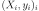 où  et 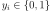.
et 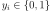.
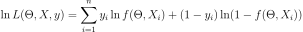
Dans le cas de la régression logistique, la fonction f est définie comme suit :

Cela ressemble beaucoup à la définition d’un neurone où la fonction d’activation 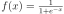 est une fonction sigmoïde.
Principe d’un arbre de décision¶
Un arbre de décision se construit peu à peu en répétant toujours
la même optimisation sur des sous-ensemble de plus en plus petit.
Il faut d’abord un critère qui permette d’évaluer la pertinence
de la division effectuée par un noeud de l’arbre.
Pour un ensemble , on
peut estimer la probabilité
 .
Le critère de Gini G qui évalue la pertinence d’une classification est
défini par 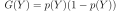.
Un autre critère est le gain d’information ou entropie H :
.
Le critère de Gini G qui évalue la pertinence d’une classification est
défini par 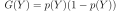.
Un autre critère est le gain d’information ou entropie H :
 .
.
On note 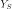 l’ensemble des  où S est un sous-ensemble.
où S est un sous-ensemble.  est noté le complémentaire.
est noté le complémentaire.
Pour le premier noeud de l’arbre de décision, on calcule pour toutes les variables et toutes les observations la diminution du critère choisi :
On choisit alors la variable k et le seuil  qui
maximise le gain. Dans le cas d’une régression logistique,
la vraisemblance correspond à :
qui
maximise le gain. Dans le cas d’une régression logistique,
la vraisemblance correspond à :
Si on suppose que la fonction f retourne une constante c, cette expression devient :
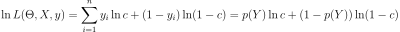
Or cette expression admet un maximum pour  puisque la dérivée
s’annule de façon évidente pour cette valeur :
puisque la dérivée
s’annule de façon évidente pour cette valeur :
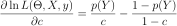
On remarque que l’optimisation d’un noeud d’un arbre de décision correspond à l’optimisation de la vraisemblance par une fonction constante. Une régression logistique calculée sur une seule variable est en quelque sorte une généralisation de ce modèle. On apprend un arbre de décision qu’on exporte au format dot.
<<<
from sklearn.datasets import load_iris
from sklearn.tree import DecisionTreeClassifier, export_graphviz
ds = load_iris()
X, y = ds.data, ds.target
y = y % 2
dt = DecisionTreeClassifier(max_depth=3, criterion="entropy")
dt.fit(X, y)
print(dt)
# export_graphviz(dt)
>>>
DecisionTreeClassifier(criterion='entropy', max_depth=3)
Ce qui donne :
![digraph Tree {
node [shape=box] ;
0 [label="X[3] <= 0.8\nentropy = 0.918\nsamples = 150\nvalue = [100, 50]"] ;
1 [label="entropy = 0.0\nsamples = 50\nvalue = [50, 0]"] ;
0 -> 1 [labeldistance=2.5, labelangle=45, headlabel="True"] ;
2 [label="X[3] <= 1.75\nentropy = 1.0\nsamples = 100\nvalue = [50, 50]"] ;
0 -> 2 [labeldistance=2.5, labelangle=-45, headlabel="False"] ;
3 [label="X[2] <= 4.95\nentropy = 0.445\nsamples = 54\nvalue = [5, 49]"] ;
2 -> 3 ;
4 [label="entropy = 0.146\nsamples = 48\nvalue = [1, 47]"] ;
3 -> 4 ;
5 [label="entropy = 0.918\nsamples = 6\nvalue = [4, 2]"] ;
3 -> 5 ;
6 [label="X[2] <= 4.85\nentropy = 0.151\nsamples = 46\nvalue = [45, 1]"] ;
2 -> 6 ;
7 [label="entropy = 0.918\nsamples = 3\nvalue = [2, 1]"] ;
6 -> 7 ;
8 [label="entropy = 0.0\nsamples = 43\nvalue = [43, 0]"] ;
6 -> 8 ;
}](../_images/graphviz-77252c69fe458f4b693e321577d953cb2aa0422f.png)
Construction d’un pseudo arbre¶
Et si on remplaçait chaque noeud par une régression logistique appris sur les exemples passant par ce noeud… Plutôt que de prendre une décision basée sur une variable donnée et de retourner une probabilité constante, on estime une régression logistique et on retourne la probabilité retournée par la régression.
S’il n’y a théoriquement aucun obstacle, en pratique, certains cas
posent quelques problèmes comme le montre l’exemple
Arbre d’indécision et repris ci-dessous.
La fonction criteria
calcule les différents gains selon les points de coupure.
(Source code, png, hires.png, pdf)
{kind=link}
{kind=link}
Le seuil de coupure est évident dans le premier cas et quasiment impossible à trouver de façon numérique dans le second avec les algorithmes tels qu’ils sont implémentés. Les arbres de décision contournent ce problème en imposant que le seuil de coupure laisse au moins quelques exemples de chaque côté ce que la régression logistique ne fait pas. On peut réflechir à d’autres critères. Le suivant explore la log-vraisemblance.
(Source code, png, hires.png, pdf)
{kind=link}
{kind=link}

La log-vraisemblance dans ce problème à une dimension
est assez simple à écrire. Pour avoir une expression qui
ne change pas en invertissant les classes, on considère
le maxiimum des vraisemblance en considérant deux classifieurs
opposés. Le graphe précédent fait varier  avec
différents
avec
différents  .
.

Aparté mathématique¶
La log-vraisemblance d’une régression logistique pour
un jeu de données  s’exprime comme
suit pour une régression logistique de paramètre
s’exprime comme
suit pour une régression logistique de paramètre
 .
.

On remarque que :
Cela explique pour on utilise souvent cette fonction pour transformer
une distance en probabilité pour un classifieur binaire.
L’apprentissage d’un arbre de décision
sklearn.tree.DecisionTreeClassifier propose le
paramètre min_samples_leaf. On se propose dans le cadre
de la régression logistique de chercher le paramètre
 qui permet de vérifier la contrainte
fixée par
qui permet de vérifier la contrainte
fixée par min_samples_leaf. Cela revient à trounver
un classifieur linéaire parallèle au premier qui vérifie
les contraintes.
Approche EM et régression logistique¶
L’article [Scott2013] explicite un algorithme d’apprentissage EM pour une régression logistique.

Il faudrait adapter cet agorithme pour apprendre deux régressions logistiques dont la combinaison sur deux parties disjointes serait meilleure qu’une seule régression logistique sur la réunion des deux parties. Cet algorithme devrait trouver à la fois les modèles et la séparation entre les deux parties.
Lien vers les réseaux de neurones¶
En remplaçant chaque noeud par une régression logistique, l’arbre de décision deviendrait un réseau de neurones, avec une structure particulière certes mais un réseau de neurones tout de même. Chaque noeud du graphe serait transformé en un neurone avec une régression logistique impliquant toutes les variables. Il ne resterait plus qu’à continuer l’apprentissage avec des algorithmes à base de gradient stochastique. Cela reviendrait à changer l’initialisation du réseau de neurones. On considère le petit arbre décision suivant, trois features, trois noeuds, deux classes.
![digraph tree {
A [label="X1 < 5",shape=record];
B [label="X2 < 3",shape=record];
C [label="X3 < 2",shape=record];
A -> B;
A -> C;
D [label="<c0> 0|<c1> 1",shape=record];
E [label="<c0> 0|<c1> 1",shape=record];
B -> D:c0;
B -> D:c1;
C -> E:c0;
C -> E:c1;
}](../_images/graphviz-7edaaeb8b7bea2c7c1a58b600614e5271da95ffc.png)
On souhaite le transformer en réseau de neurones avec une
structure qui serait celle qui suit. On note tout d’abord
la fonction sigmoïde 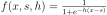.
Elle vaut 1/2 lorsque x vaut s, vaut 1 lorsque x
est très grand, et 0 lorsque x est très petit.
C’est équivalent à la fonction
 où
où  ,
,  et
et  .
.
![digraph tree {
A [label="y1=g(X, (-1, 0, 0), 5, h)",shape=record];
B [label="y2=g(X, (0, -1, 0), 3, h)",shape=record];
C [label="y3=g(X, (0, 0, -1), 2, h)",shape=record];
D [label="y4=g((y1, y2), (-1, -1), 1, h)",shape=record];
E [label="y5=g((y1, y3), (-1, -1), 1, h)",shape=record];
A -> D;
A -> E;
B -> D;
C -> E;
F [label="y6=g((y4, y5), (-1, -1), 1, h)",shape=record];
CL3 [label="<c0> 0|<c1> 1"];
D -> F;
E -> F;
F -> CL3:c0;
F -> CL3:c1;
}](../_images/graphviz-ea73b40fb594b0ad7c6f920ced380bdde5c53a62.png)
Le problème avec la structure proposée est que chaque noeud final retourne toujours une classe alors que dans un arbre de décision, seule une feuille répond. Un noeud final fait la somme de toutes les feuilles, deux dans cet exemple. L’implémentation de scikit-learn n’est pas la plus facile à manipuler dans le sens où chaque couche ne peut prendre comme entrée que les sorties de la précédente et la fonction d’activation est la même pour tous les neurones. On ne peut pas non plus geler certains coefficients lors de l’apprentissage. C’est à ce moment-là qu’on se demande si ça vaut le coup de se lancer dans une implémentation à la rigueur jolie mais sans doute pas porteuse d’une innovation majeure. Et ce n’est pas la première fois que quelqu’un se lance dans la conversion d’un arbre en réseaux de neurones.
J’ai quand même essayé avec le notebook Un arbre de décision en réseaux de neurones
et les classes NeuralTreeNode,
NeuralTreeNet.
Si l’idée de départ est séduisante, elle requiert une contrainte
supplémentaire qui est de créer un réseau de neurones qui ne soit
pas un minimum local de la fonction d’erreur auquel cas
un apprentissage avec un algorithme à base de gradient ne pourra
pas améliorer les performances du réseau de neurones.

La structure proposée n’est cependant pas la meilleure et elle pourrait être simplifiée. D’autres projets s’appuie des librairies existantes :
Ce dernier package convertit un réseau de neurones en autant de couches que la profondeur de l’arbre. L’image qui suit est tiré de l’article [Nakandalam2020] et qui résume leur idée.

Plan orthogonal¶
Dans un espace à plusieurs dimensions, la régression logistique
divise l’espace à l’aide d’un hyperplan. La fonction de décision
reste similaire puisque la probabilité de classification dépend de la
distance à cet hyperplan. On suppose qu’il existe une
régression logistique binaire apprise sur un nuage de points
. La probabilité de bonne classification est
définie par :
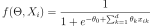
Le vecteur  définit un hyperplan. On choisit un vecteur
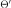 de telle sorte que 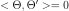. Les deux
vecteurs sont orthogonaux. On définit maintenant deux
autres vecteurs 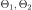 pour deux autres régressions
logistiques. Pour classer un point
définit un hyperplan. On choisit un vecteur
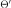 de telle sorte que 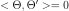. Les deux
vecteurs sont orthogonaux. On définit maintenant deux
autres vecteurs 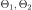 pour deux autres régressions
logistiques. Pour classer un point  , on procède comme suit :
, on procède comme suit :
si
 , on classe le point en appliquant
la régression logistique définie par 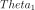,
, on classe le point en appliquant
la régression logistique définie par 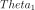,si
 , on classe le point en appliquant
la régression logistique définie par .
, on classe le point en appliquant
la régression logistique définie par .
De manière évidente, les performances en classification sont les mêmes que la première régression logistique. On peut ensuite réestimer les vecteurs pour maximiser la vraisemblance sur chacune des parties. Il ne reste plus qu’à montrer que la vraisemblance globale sera supérieur à celle obtenue par la première régression logistique.
On pourrait implémenter l’algorithme suivant (Arbre de régressions logistiques en cascade orthogonale) :
Apprendre une régression logistique
- Choisir un hyperplan perpendiculaire en optimisation
un critère Construction d’un pseudo arbre
Apprendre une régression logistique sur chacune des parties.
Continuer jusqu’à ce l’amélioration soit négligeable
Interprétabilité¶
Bibliographie¶
Expectation-maximization for logistic regression, James G. Scott, Liang Sun
A Tensor-based Approach for One-size-fits-all ML Prediction Serving. Supun Nakandalam, Karla Saur, Gyeong-In Yu, Konstantinos Karanasos, Carlo Curino, Markus Weimer, Matteo Interlandi. To appear at OSDI 2020.